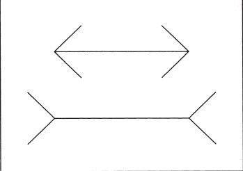

看上去不等长实际上等长的两条线
为了理解系统1的自主性以及印象和信念的区别，请你仔细看看图 3。

图3
这幅图没有什么特别之处：两条不同长度的水平线，两端有朝向不同方向的箭头，并且下面一条线明显比上面那条线长。这是我们看到的所有内容，而且我们肯定相信自己的眼睛。但是，如果你曾经见过这幅图，就会认出这便是那幅著名的缪勒 –莱耶错觉图，要证实这一错觉很简单，只需要找把尺子量一量，你就会发现其实两条水平线是等长的。
既然测量了这两条线的长度，你——你的系统2，即你称为“自我”的意识体—就会有一个新的信念：你知道这两条线是等长的。当被问及它们的长度时，你也会如实说。然而，你肉眼所见的依然是下面那条线比较长。你选择相信测量的结果，但无法控制住系统1带给你的直观感受，即使你知道这两条线长度相同，但是仍然无法把它们视为等长的线。想要消除这种错觉，唯一能做的就是当你再看到两条平行线，并且线的两端有朝向不同方向的箭头时，必须学会怀疑自己的感觉。要贯彻这一规则，你必须具备识别这种错觉模式的能力，能够回忆起你所了解的相关知识。如果可以做到这一点，你就再也不会掉入缪勒 –莱耶错觉的陷阱了。但是，你眼中所见的两条线肯定还是一条长一条短。
不是所有错觉都是视觉上的，还有思维方面的，我们将其称为认知错觉。我读研究生的时候，选修了一些与心理疗法的艺术及科学相关的课程。记得有一次上课时，老师跟我们分享了一些坐诊艺术。他告诉我们：“有时，你会碰到一两个这样的病人—他会像说故事一样，讲述自己以前遭遇的误诊，这些诊断五花八门，让人担心。他看过几个临床医生，但都没多大效果。这个病人还能清楚地描述医生是如何误解他的，但他很快就观察到，你和其他医生是不一样的，你能感同身受，充分理解他，并可以为他提供帮助。”此时，我的老师提高了音量，继续讲道：“千万别有接收这个病人的想法！将他赶走！他很有可能是位精神病患者，而且你也帮不了他。”
多年以后，我才知道那位老师当时是在提醒我们，要提防病态的假象。精神病研究领域的权威也证实了我们那位老师所给的建议是合理的。这与缪勒–莱耶错觉类似。没人教过我们如何体会患者的心情。所以我们的老师断言，我们对那位患者的同情心是不由自主的，这种同情心可能源自系统1.此外，也没有人教过我们不要总是相信自己对患者的感情。有人告诉我们，过多关注一个有数次治疗失败经历的病人是一种危险的信号—正如平行线两端的箭头一样，会让人产生错觉。这是一种认知错觉。我的老师教过我（系统2）如何识别这种错觉，也曾告诉我切莫相信这种感觉，更不要依照感觉行事。
提到认知错觉，最常被问及的问题就是能否避免这种错觉。上述各例传达的信息不容乐观。因为系统1是自主运行的，我们无法随意使其停止，因此直观思维所导致的错误常常难以避免。我们不可能一直没有成见，因为系统2可能对系统1产生的错误毫无所知。即使对可能发生的错误有所察觉，也需要系统2进行强有力的调控和积极的运作才有可能避免。然而，作为一种生活方式，时刻保持警觉性并不是一件好事，想要这样做也并不实际。总是质疑自己的想法会使我们的生活非常枯燥乏味，因为系统2在代替系统1进行日常抉择时总是耗时很长且非常低效。最好的解决办法就是妥协：学会区别常会出现重大错误的情境，在风险很高的时候，尽力避免这些错误。前文中曾提到过，发现别人的错误总比发现自己的错误更容易。